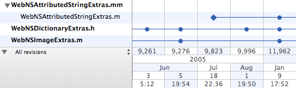
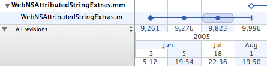

) in the upper left corner of the filter area.
) in the upper left corner of the filter area.The timeline displays the history logs for the selected items in a compact, visual style which enables the comparison of multiple logs by stacking them vertically above one another:

Each item's log is represented as a single horizontal strip, with the oldest revision on the left and newest revision on the right.
The date of each revision is displayed in compact form stacked from top to bottom in the timeline's axis.
If you wish to maximize the vertical space available in the history viewer you can collapse the timeline axis using the disclosure button () in the upper left corner of the filter area.
Items whose histories' contain branch points (including simple moves and copies) are displayed with a disclosure button next to the item's name. Expanding the disclosure button () reveals the ancestor's history and the branch point on the timeline:

In the above example WebNSAttributedStringExtras.mm was branched from WebNSAttributedStringExtras.m at revision 9,996.
The revision symbols used have the following meanings:
| The item was added to the repository either through an import or by being added to a working copy. | |
| The item was branched. Branching operations include copies, moves and renames. Expanding the timeline will reveal the source of the branch operation, indicating whether the item was copied or moved. | |
| The item was modified. Both content and property modifications are displayed in this way. | |
A change was committed on the item's path. The item itself was not modified. Such modifications include:
|
|
| The item was deleted. |